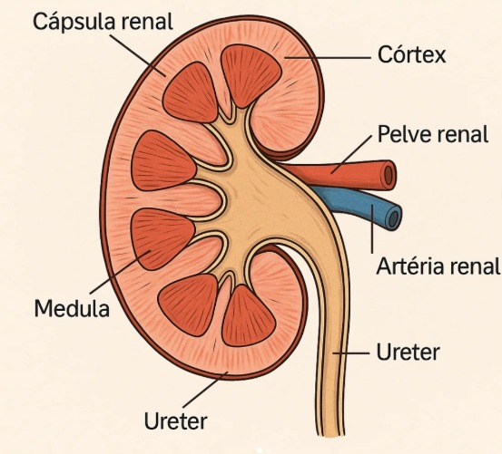
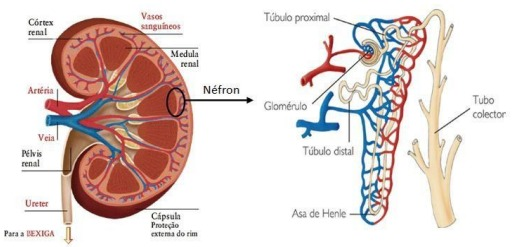

Doença Renal Crônica e Aguda em Cães e Gatos
Guia prático baseado em evidências
Uma visão completa sobre fisiopatologia, diagnóstico, estadiamento IRIS, tratamento e prevenção das principais enfermidades renais na rotina clínica de pequenos animais.
Introdução
Imagine um gato que passa a recusar alimento por alguns dias, permanecendo mais quieto do que o habitual. Ou um cão que, de forma gradual, começa a beber quantidades cada vez maiores de água e a urinar com mais frequência. Embora esses sinais possam parecer simples ou inespecíficos à primeira vista, eles podem representar os primeiros indícios de uma enfermidade renal significativa.
As doenças renais estão entre as principais causas de morbidade e mortalidade em cães e gatos, especialmente em pacientes adultos e geriátricos. Os rins desempenham funções vitais para a manutenção da homeostase do organismo, sendo responsáveis pela filtração de resíduos metabólicos, regulação do equilíbrio hídrico e eletrolítico, controle da pressão arterial e produção de hormônios essenciais para diversas funções fisiológicas. Quando ocorre comprometimento dessas estruturas, múltiplos sistemas orgânicos podem ser afetados, resultando em manifestações clínicas que variam desde alterações discretas até quadros potencialmente fatais.
Entre as enfermidades renais mais frequentemente diagnosticadas na rotina da clínica de pequenos animais destacam-se a Injúria Renal Aguda (IRA) e a Doença Renal Crônica (DRC). Embora ambas comprometam a função renal, apresentam características bastante distintas em relação à velocidade de evolução, mecanismos fisiopatológicos, possibilidades terapêuticas e prognóstico.
A Injúria Renal Aguda caracteriza-se pela perda súbita da função renal, ocorrendo em questão de horas ou dias. Dependendo da causa e da rapidez do diagnóstico, o quadro pode ser parcial ou totalmente reversível. Diversas situações podem desencadear a IRA, incluindo desidratação severa, hipotensão, intoxicações, infecções sistêmicas e obstruções do trato urinário.
Por outro lado, a Doença Renal Crônica é uma condição progressiva e irreversível, caracterizada pela perda gradual dos néfrons funcionais ao longo de meses ou anos. Em muitos casos, os sinais clínicos tornam-se evidentes apenas quando uma parcela significativa da função renal já foi comprometida, tornando o diagnóstico precoce um dos maiores desafios enfrentados pelos médicos-veterinários.
Nos últimos anos, importantes avanços ocorreram no campo da nefrologia veterinária. Novos biomarcadores, como a SDMA (Dimetilarginina Simétrica), protocolos de estadiamento desenvolvidos pela International Renal Interest Society (IRIS) e abordagens terapêuticas mais direcionadas têm contribuído para diagnósticos mais precoces e melhor qualidade de vida dos pacientes acometidos por doenças renais.
Além disso, a crescente expectativa de vida dos animais de companhia tem aumentado a incidência de enfermidades crônicas, tornando cada vez mais frequente a necessidade de monitoramento renal durante consultas de rotina. Dessa forma, compreender os mecanismos envolvidos nas doenças renais deixou de ser um conhecimento restrito aos especialistas e passou a ser uma competência fundamental para clínicos gerais, estudantes de Medicina Veterinária e demais profissionais que atuam na área de pequenos animais.
Para os tutores, o entendimento dessas enfermidades também possui grande importância. O reconhecimento precoce de sinais clínicos, a adesão aos tratamentos recomendados e a realização de acompanhamentos periódicos podem impactar diretamente a sobrevida e o bem-estar dos animais diagnosticados com alterações renais.
Este eBook foi elaborado com o objetivo de fornecer uma visão prática, atualizada e baseada em evidências sobre a Injúria Renal Aguda e a Doença Renal Crônica em cães e gatos. Ao final da leitura, espera-se que o leitor seja capaz de compreender as principais diferenças entre IRA e DRC, reconhecer precocemente os sinais de comprometimento renal, interpretar exames complementares com maior segurança e aplicar condutas clínicas mais eficazes no manejo dos pacientes renais.
O conhecimento é uma das ferramentas mais importantes para transformar diagnósticos precoces em melhores prognósticos. E quando falamos de doenças renais, cada dia pode fazer a diferença entre a recuperação, a progressão da doença ou até mesmo a sobrevivência do paciente.
Entendendo os Rins
A importância dos rins para a vida
Os rins são órgãos essenciais para a manutenção da homeostase do organismo. Embora muitas pessoas associem sua função apenas à produção de urina, sua atuação vai muito além disso. Essas estruturas trabalham continuamente para manter o equilíbrio interno do corpo, regulando a composição do sangue, controlando o volume de líquidos corporais e eliminando substâncias potencialmente tóxicas.
Em cães e gatos saudáveis, os rins recebem aproximadamente 20% a 25% de todo o débito cardíaco. Esse elevado fluxo sanguíneo demonstra a importância da filtração renal para o funcionamento adequado do organismo.
Quando os rins perdem sua capacidade funcional, diversas alterações metabólicas começam a ocorrer simultaneamente. O acúmulo de substâncias tóxicas, os desequilíbrios eletrolíticos e as alterações hormonais afetam praticamente todos os sistemas corporais, justificando a grande variedade de sinais clínicos observados nos pacientes renais.
Anatomia básica dos rins
Os rins são órgãos pares localizados na cavidade abdominal, próximos à coluna vertebral. Em cães, o rim direito encontra-se geralmente mais cranial que o esquerdo devido à posição ocupada pelo fígado. Em gatos, ambos os rins costumam apresentar maior mobilidade dentro da cavidade abdominal.
Externamente, os rins apresentam formato semelhante a um feijão e são revestidos por uma cápsula fibrosa protetora. Internamente, podem ser divididos em três regiões principais:
Córtex renal
É a região mais externa do órgão. Contém glomérulos, túbulos contorcidos proximais e túbulos contorcidos distais. Grande parte da filtração sanguínea inicia-se nesta região.
Medula renal
Localizada abaixo do córtex. Contém alças de Henle e ductos coletores. É responsável por importantes mecanismos de concentração urinária.
Pelve renal
Região central responsável por coletar a urina produzida pelos néfrons e direcioná-la para os ureteres.

O néfron: a unidade funcional do rim
Cada rim é composto por milhares de unidades microscópicas chamadas néfrons. O néfron é considerado a unidade funcional renal, sendo responsável pela formação da urina e pela manutenção da homeostase. Cada néfron é formado por:
- Glomérulo
- Cápsula de Bowman
- Túbulo contorcido proximal
- Alça de Henle
- Túbulo contorcido distal
- Ducto coletor

A perda progressiva dessas estruturas é o principal mecanismo responsável pelo desenvolvimento da Doença Renal Crônica.
Como ocorre a formação da urina?
A produção de urina acontece por meio de três processos fundamentais:
1. Filtração glomerular
O sangue chega ao glomérulo através das arteríolas aferentes, onde ocorre uma filtração seletiva. Passam para o filtrado: água, eletrólitos, glicose, ureia e creatinina. Normalmente não passam proteínas de alto peso molecular nem células sanguíneas. O produto inicial dessa filtração é chamado filtrado glomerular.
2. Reabsorção tubular
Após a filtração, o organismo recupera substâncias importantes que não devem ser eliminadas: água, sódio, potássio, cloro, glicose e aminoácidos. Mais de 99% da água filtrada retorna à circulação sanguínea. Esse mecanismo impede perdas excessivas de líquidos e nutrientes.
3. Secreção tubular
Além de reabsorver substâncias úteis, os túbulos renais também eliminam compostos que precisam ser removidos do organismo: íons hidrogênio, potássio, fármacos e metabólitos tóxicos. Esse processo auxilia no controle do equilíbrio ácido-base e da composição sanguínea.
Principais funções dos rins
Excreção de resíduos metabólicos
Os rins eliminam substâncias produzidas pelo metabolismo normal do organismo, como ureia, creatinina, ácido úrico e diversas toxinas. Quando ocorre insuficiência renal, essas substâncias acumulam-se no sangue, provocando o quadro conhecido como azotemia. Nos estágios mais avançados, pode ocorrer a síndrome urêmica, responsável por diversas complicações sistêmicas.
Controle do equilíbrio hídrico
Os rins regulam a quantidade de água presente no organismo. Quando há excesso de água, produzem maior volume urinário. Quando há escassez, conservam água produzindo urina mais concentrada. Esse mecanismo é fundamental para prevenir tanto a desidratação quanto a sobrecarga hídrica.
Regulação dos eletrólitos
Os rins mantêm concentrações adequadas de sódio, potássio, cálcio, magnésio e fósforo. Alterações nesses elementos podem resultar em sinais clínicos graves. Por exemplo, a hipercalemia frequentemente observada em pacientes com Injúria Renal Aguda pode causar arritmias cardíacas potencialmente fatais.
Controle da pressão arterial
Os rins participam diretamente da regulação da pressão arterial através do Sistema Renina-Angiotensina-Aldosterona (SRAA). Quando ocorre redução da perfusão renal, há liberação de renina, formação de angiotensina II, vasoconstrição e retenção de sódio e água. Embora inicialmente seja um mecanismo compensatório, sua ativação crônica pode contribuir para hipertensão arterial sistêmica e progressão da doença renal.
Produção de eritropoietina
A eritropoietina é um hormônio produzido principalmente pelos rins. Sua função é estimular a medula óssea a produzir hemácias. Quando a função renal está comprometida, a produção desse hormônio diminui, favorecendo o desenvolvimento de anemia não regenerativa, especialmente em pacientes com Doença Renal Crônica.
Ativação da vitamina D
Os rins participam da conversão da vitamina D em sua forma biologicamente ativa. Essa vitamina é essencial para absorção intestinal de cálcio, saúde óssea e metabolismo mineral. Alterações nesse processo podem contribuir para distúrbios do metabolismo ósseo e mineral observados em pacientes renais crônicos.
O extraordinário poder de compensação dos rins
Uma característica importante do tecido renal é sua enorme capacidade compensatória. Mesmo após a perda de uma quantidade significativa de néfrons, os néfrons remanescentes conseguem aumentar sua atividade para manter a função renal aparentemente normal. Por esse motivo, muitos pacientes permanecem sem sinais clínicos por meses ou até anos.
Na maioria dos casos, os sinais de insuficiência renal só se tornam evidentes quando aproximadamente 65% a 75% da função renal já foi comprometida. Essa capacidade de compensação explica por que exames de triagem e biomarcadores precoces, como a SDMA, são tão importantes para o diagnóstico precoce.
O que acontece quando os rins falham?
Quando a função renal diminui de forma significativa, uma série de alterações ocorre simultaneamente:
Com o avanço da doença, praticamente todos os sistemas do organismo podem ser afetados, incluindo os sistemas cardiovascular, gastrointestinal, neurológico e hematológico. É justamente por essa ampla repercussão sistêmica que as doenças renais são consideradas uma das condições mais complexas e desafiadoras da medicina veterinária.
Injúria Renal Aguda (IRA)
O que é a Injúria Renal Aguda?
A Injúria Renal Aguda (IRA) é uma síndrome clínica caracterizada pela perda abrupta da função renal, ocorrendo em um período que pode variar de poucas horas a alguns dias. Essa redução súbita da capacidade dos rins compromete a filtração glomerular, a excreção de resíduos metabólicos e a manutenção do equilíbrio hídrico, eletrolítico e ácido-base.
Diferentemente da Doença Renal Crônica (DRC), que se desenvolve lentamente ao longo do tempo, a IRA apresenta instalação rápida e frequentemente está associada a uma causa desencadeante identificável. A gravidade do quadro pode variar desde alterações laboratoriais discretas até insuficiência renal grave com risco iminente de morte. Entretanto, quando diagnosticada precocemente e tratada adequadamente, a IRA possui potencial de reversibilidade parcial ou até mesmo completa.
Como a IRA se desenvolve?
Independentemente da causa inicial, a maioria dos casos de Injúria Renal Aguda resulta em diminuição da Taxa de Filtração Glomerular (TFG). Essa redução desencadeia uma série de alterações fisiopatológicas:
- Retenção de ureia e creatinina
- Acúmulo de toxinas urêmicas
- Alterações eletrolíticas
- Distúrbios ácido-base
- Alteração da produção urinária
- Sobrecarga hídrica ou desidratação
À medida que o dano renal progride, a capacidade dos rins de manter a homeostase torna-se insuficiente, levando ao aparecimento dos sinais clínicos.
Classificação da IRA
Para facilitar o entendimento das causas, a IRA é tradicionalmente dividida em três grandes categorias:
IRA Pré-Renal
Ocorre quando há redução do fluxo sanguíneo que chega aos rins. Nesse caso, inicialmente o tecido renal pode estar estruturalmente íntegro, porém recebe quantidade insuficiente de sangue para realizar suas funções adequadamente. As principais causas incluem:
- Desidratação severa
- Hemorragias
- Choque hipovolêmico
- Sepse
- Insuficiência cardíaca
- Hipotensão prolongada
- Anestesia com hipotensão persistente
Exemplo clínico: Um cão com gastroenterite hemorrágica grave apresenta intensa perda de líquidos por vômitos e diarreia. A diminuição do volume circulante reduz a perfusão renal e pode desencadear uma IRA pré-renal. Quando corrigida rapidamente, essa condição pode ser totalmente reversível.
IRA Renal (Intrínseca)
Caracteriza-se por lesão direta das estruturas renais, com dano aos glomérulos, túbulos renais, interstício ou vasos sanguíneos renais. As principais causas incluem:
- Agentes infecciosos: leptospirose, pielonefrite bacteriana, sepse sistêmica
- Toxinas e medicamentos: aminoglicosídeos, AINEs, cisplatina, contrastes radiográficos
- Intoxicações em cães: etilenoglicol, uvas, passas
- Intoxicações em gatos: lírios (Lilium spp.), etilenoglicol
- Isquemia renal prolongada, glomerulopatias agudas, vasculites, doenças imunomediadas
IRA Pós-Renal
Ocorre quando há obstrução do fluxo urinário após a formação da urina. A pressão retrógrada gerada pela obstrução reduz a filtração glomerular e compromete rapidamente a função renal. Principais causas:
- Obstrução uretral felina
- Urolitíase obstrutiva
- Neoplasias urinárias
- Estenoses uretrais
- Ruptura vesical
- Ruptura uretral
Exemplo clínico: Um gato macho com obstrução uretral apresenta incapacidade de urinar, distensão vesical e hipercalemia grave. Em poucas horas pode desenvolver alterações cardíacas potencialmente fatais.
Principais fatores de risco
Alguns pacientes apresentam maior predisposição ao desenvolvimento de IRA:
- Pacientes geriátricos
- Animais desidratados
- Pacientes internados em estado crítico
- Portadores de doenças sistêmicas
- Pacientes submetidos a cirurgias prolongadas
- Uso de medicamentos potencialmente nefrotóxicos
- Exposição a substâncias tóxicas
Sinais clínicos
Os sinais clínicos da IRA costumam surgir rapidamente e podem variar conforme a causa, a intensidade da lesão e o estágio da doença.
Sinais iniciais
- Apatia
- Hiporexia
- Anorexia
- Letargia
- Vômitos
- Náusea
- Desidratação
Sinais moderados
- Perda de peso aguda
- Halitose urêmica
- Dor abdominal
- Alterações urinárias
- Fraqueza muscular
Sinais graves
- Oligúria
- Anúria
- Convulsões
- Hipotermia
- Arritmias cardíacas
- Coma
Alterações na produção urinária
A avaliação da diurese é uma das etapas mais importantes no monitoramento desses pacientes.
Poliúria
Produção excessiva de urina. Pode ocorrer durante a fase de recuperação.
Oligúria
Produção urinária reduzida, geralmente definida como menor que 1 mL/kg/hora. Costuma indicar pior prognóstico.
Anúria
Ausência ou produção mínima de urina. Representa uma emergência médica e frequentemente está associada a lesões graves ou obstruções urinárias.
Alterações laboratoriais mais frequentes
Azotemia
Caracterizada pela elevação de ureia e creatinina. É uma das principais alterações observadas na IRA.
Hipercalemia
A diminuição da excreção renal de potássio pode resultar em hipercalemia — uma das complicações mais perigosas da IRA. Sinais associados: bradicardia, fraqueza muscular, arritmias e parada cardíaca.
Acidose metabólica
A incapacidade dos rins em excretar íons hidrogênio leva ao desenvolvimento de acidose metabólica, com consequências como depressão neurológica, fraqueza e alterações cardiovasculares.
Hiperfosfatemia
O aumento do fósforo sérico é frequente devido à redução da excreção renal. Níveis elevados podem agravar a lesão renal e contribuir para alterações metabólicas adicionais.
Diagnóstico da IRA
O diagnóstico baseia-se na integração entre histórico clínico, exame físico, exames laboratoriais e exames de imagem. Perguntas importantes no histórico: Houve exposição a toxinas? O paciente teve acesso a medicamentos? Existe histórico de obstrução urinária? Houve episódios recentes de desidratação?
Complicações da IRA
- Hipercalemia
- Sobrecarga hídrica
- Hipertensão arterial
- Edema pulmonar
- Síndrome urêmica
- Distúrbios neurológicos
- Arritmias cardíacas
Prognóstico
O prognóstico é extremamente variável. Os principais fatores que influenciam a recuperação incluem: causa primária, tempo até o início do tratamento, presença de oligúria ou anúria, resposta à fluidoterapia, necessidade de diálise e existência de lesão renal prévia. Pacientes diagnosticados precocemente apresentam taxas de recuperação significativamente maiores.
Doença Renal Crônica (DRC)
O que é a Doença Renal Crônica?
A Doença Renal Crônica (DRC) é definida como a presença de alterações estruturais ou funcionais nos rins persistentes por mais de três meses, capazes de comprometer a saúde do paciente. Trata-se de uma enfermidade progressiva e irreversível, caracterizada pela perda gradual e contínua dos néfrons funcionais. À medida que essas unidades são destruídas, a capacidade dos rins de desempenhar suas funções diminui, levando ao desenvolvimento de alterações metabólicas, hormonais e sistêmicas.
A DRC é considerada uma das doenças mais comuns em animais idosos, especialmente em gatos, nos quais sua prevalência aumenta significativamente após os 10 anos de idade. Embora não exista cura para a maioria dos casos, o diagnóstico precoce e a implementação adequada do tratamento podem retardar a progressão da doença, aumentar a sobrevida e melhorar significativamente a qualidade de vida do paciente.
Como a DRC se desenvolve?
A característica central da DRC é a destruição progressiva dos néfrons. Quando parte dessas estruturas é perdida, os néfrons remanescentes tentam compensar o dano aumentando sua atividade funcional — mecanismo conhecido como hiperfiltração glomerular. Inicialmente, essa adaptação permite a manutenção da função renal. Contudo, com o passar do tempo, a sobrecarga imposta aos néfrons sobreviventes favorece novas lesões, criando um ciclo contínuo de progressão da doença.
Principais causas da DRC
Cães
As causas mais comuns incluem glomerulopatias crônicas, nefrite intersticial crônica, doenças hereditárias, displasias renais, pielonefrites recorrentes, urolitíase crônica e hipertensão arterial sistêmica. Algumas raças apresentam predisposição genética: Shih Tzu, Lhasa Apso, Cocker Spaniel, Bull Terrier, Samoieda e Doberman.
Gatos
Nos felinos, as principais causas incluem nefrite tubulointersticial crônica, doença renal policística, amiloidose renal, pielonefrite crônica, linfoma renal e alterações relacionadas ao envelhecimento. A nefropatia tubulointersticial crônica é considerada a causa mais frequente de DRC em gatos.
Fatores que aceleram a progressão da doença
Hipertensão arterial sistêmica
A pressão elevada provoca lesão contínua dos glomérulos. Além de agravar a DRC, aumenta o risco de descolamento de retina, acidente vascular encefálico e lesões cardíacas.
Proteinúria
A presença excessiva de proteínas na urina não é apenas consequência da doença renal. Ela também contribui diretamente para a progressão da lesão. Pacientes proteinúricos geralmente apresentam pior prognóstico quando comparados aos não proteinúricos.
Hiperfosfatemia
O aumento das concentrações séricas de fósforo favorece mineralização tecidual, inflamação renal e progressão da nefropatia. Por esse motivo, o controle do fósforo é uma das principais metas terapêuticas na DRC.
Obesidade
Pacientes obesos apresentam maior risco de progressão da doença devido ao aumento da demanda metabólica sobre os rins.
Doença periodontal
A inflamação crônica associada às infecções periodontais pode contribuir para lesões renais ao longo do tempo.
Principais alterações fisiopatológicas
Azotemia e síndrome urêmica
A redução da filtração glomerular leva ao acúmulo de resíduos nitrogenados (ureia, creatinina, SDMA). Quando a retenção de toxinas atinge níveis elevados, desenvolve-se a síndrome urêmica — condição sistêmica responsável por náusea, vômitos, úlceras orais, halitose urêmica, letargia e fraqueza.
Distúrbios eletrolíticos
As alterações mais comuns incluem hiperfosfatemia, hipocalemia (especialmente em gatos), alterações no cálcio e acidose metabólica.
Anemia renal
A produção reduzida de eritropoietina compromete a formação de hemácias, resultando em anemia não regenerativa com mucosas pálidas, fraqueza, intolerância ao exercício e letargia.
Hipertensão arterial sistêmica
A ativação persistente do Sistema Renina-Angiotensina-Aldosterona favorece o desenvolvimento da hipertensão, podendo causar lesões em retina, coração, encéfalo e nos próprios rins.
Como a DRC afeta outros órgãos?
A doença renal não deve ser vista como um problema isolado dos rins — ela afeta praticamente todo o organismo: sistema gastrointestinal (hiporexia, vômitos, úlceras, gastrite urêmica), cardiovascular (hipertensão, hipertrofia cardíaca, arritmias), nervoso (desorientação, tremores, convulsões, encefalopatia urêmica) e musculoesquelético (perda de massa muscular, fraqueza, emagrecimento progressivo).
A importância do diagnóstico precoce
Um dos maiores desafios da DRC é que os sinais clínicos costumam surgir apenas quando grande parte da função renal já foi perdida. Por isso, a realização de exames preventivos em pacientes de risco é fundamental. Devem ser monitorados regularmente: creatinina, SDMA, urinálise, proteinúria, pressão arterial e ultrassonografia renal.
Em gatos idosos, a inclusão da SDMA em check-ups anuais pode permitir o diagnóstico meses antes da elevação da creatinina.
Diferenças entre IRA e DRC
Na rotina clínica, é comum receber pacientes apresentando sinais inespecíficos como apatia, anorexia, vômitos e alterações nos exames laboratoriais. Muitas vezes, tanto a Injúria Renal Aguda quanto a Doença Renal Crônica podem cursar com aumento de ureia e creatinina, dificultando o diagnóstico inicial. Entretanto, distinguir corretamente essas duas condições é fundamental, pois elas possuem comportamentos biológicos completamente diferentes.
| Característica | IRA | DRC |
|---|---|---|
| Início dos sinais clínicos | Súbito | Gradual |
| Evolução | Horas a dias | Meses a anos |
| Reversibilidade | Possível | Não |
| Histórico clínico | Curto | Longo |
| Tamanho renal | Normal ou aumentado | Frequentemente reduzido |
| Anemia | Incomum | Comum |
| Hipertensão | Pode ocorrer | Muito frequente |
| Prognóstico | Variável | Progressivo |
| Necessidade de tratamento contínuo | Nem sempre | Geralmente permanente |
Avaliação do histórico clínico
Sugestivo de IRA
O tutor frequentemente relata início recente dos sinais clínicos, evolução rápida, exposição a medicamentos, possível intoxicação, episódios recentes de desidratação, obstrução urinária, cirurgia recente ou trauma.
Exemplo clínico: Um cão que ingeriu etilenoglicol há dois dias e desenvolveu vômitos, apatia e azotemia provavelmente apresenta uma Injúria Renal Aguda.
Sugestivo de DRC
O tutor costuma relatar emagrecimento progressivo, aumento da ingestão de água há semanas ou meses, aumento da frequência urinária, diminuição gradual do apetite e histórico prolongado de alterações clínicas.
Exemplo clínico: Um gato de 13 anos com perda de peso há seis meses, poliúria, polidipsia e hipertensão arterial apresenta forte suspeita de Doença Renal Crônica.
O papel da ultrassonografia
A ultrassonografia renal é uma das ferramentas mais úteis para diferenciação entre IRA e DRC. Achados sugestivos de IRA: rins normais ou aumentados, edema renal, alteração difusa da ecogenicidade, pielonefrite, hidronefrose. Achados sugestivos de DRC: rins reduzidos, contornos irregulares, perda da definição córtico-medular, fibrose renal, mineralização.
Quando IRA e DRC ocorrem juntas?
Uma situação relativamente comum na prática clínica é a chamada "IRA sobre DRC": um paciente portador de doença renal crônica sofre uma nova agressão renal aguda por desidratação, infecção urinária, uso de medicamentos nefrotóxicos ou obstrução urinária. Esses casos costumam apresentar maior complexidade diagnóstica e prognóstica.
Fluxograma de raciocínio clínico
Principais Sinais Clínicos das Doenças Renais
As doenças renais frequentemente se manifestam por sinais clínicos inespecíficos, especialmente em seus estágios iniciais. Por esse motivo, muitos pacientes são diagnosticados apenas quando já apresentam perda significativa da função renal. Na rotina clínica, sintomas como diminuição do apetite, perda de peso ou aumento da ingestão de água podem ser atribuídos equivocadamente ao envelhecimento normal do animal.
Sinais clínicos mais comuns na DRC
Poliúria
A poliúria é definida como o aumento da produção urinária e trata-se de um dos sinais mais precoces e frequentes da DRC. À medida que os néfrons são destruídos, a capacidade de concentrar a urina diminui progressivamente. O tutor pode observar caixa de areia mais molhada, necessidade de trocar tapetes higiênicos com maior frequência, maior volume de urina durante passeios e episódios de micção dentro de casa.
Polidipsia
A polidipsia corresponde ao aumento da ingestão de água. Na maioria dos casos, surge como consequência da poliúria. O paciente perde grande quantidade de água pela urina e o organismo tenta compensar estimulando o centro da sede. Muitos tutores relatam que o paciente "passou a beber água como nunca antes".
Perda de peso
A perda progressiva de peso é extremamente comum na DRC, frequentemente ocorrendo mesmo quando o paciente continua se alimentando. Os fatores envolvidos são redução do apetite, catabolismo muscular, inflamação crônica, acidose metabólica e alterações hormonais.
Hiporexia e anorexia
A redução do apetite é uma das queixas mais frequentes dos tutores. O acúmulo de toxinas urêmicas provoca náusea, alteração do paladar, gastrite urêmica e desconforto gastrointestinal. Inicialmente o paciente torna-se seletivo. Com a progressão da doença, pode ocorrer anorexia completa.
Vômitos
Os vômitos são comuns principalmente em estágios mais avançados. A síndrome urêmica promove irritação da mucosa gastrointestinal e alterações metabólicas que estimulam o centro do vômito. A persistência dos vômitos contribui para desidratação e piora clínica.
Halitose urêmica
Caracterizada por odor forte e desagradável proveniente da cavidade oral, semelhante ao cheiro de amônia. O aumento da ureia sanguínea favorece sua conversão em amônia por bactérias presentes na boca. Esse sinal costuma indicar doença renal mais avançada.
Úlceras orais
Pacientes com síndrome urêmica grave podem desenvolver lesões ulcerativas na língua, gengiva e mucosa oral. Essas lesões são dolorosas e agravam ainda mais a redução do apetite.
Hipertensão arterial sistêmica
A hipertensão é uma das complicações mais importantes da DRC. Muitos pacientes são assintomáticos inicialmente. Quando sinais clínicos aparecem, podem incluir alterações visuais, midríase, desorientação, sangramento ocular e convulsões. Por esse motivo, a aferição periódica da pressão arterial deve fazer parte da rotina de monitoramento.
Sinais clínicos mais comuns na IRA
Apatia
A apatia costuma ser um dos primeiros sinais percebidos. O animal torna-se menos ativo, menos responsivo e menos interessado em brincadeiras e interação. Como a IRA possui evolução rápida, essa alteração geralmente surge de forma abrupta.
Anorexia
A perda completa do apetite é extremamente comum. Diferentemente da DRC, na qual o apetite costuma diminuir gradualmente, na IRA a anorexia pode instalar-se em poucas horas ou dias.
Vômitos intensos
Os vômitos frequentemente são mais graves e intensos do que os observados na DRC. Podem resultar em desidratação severa, distúrbios eletrolíticos e piora da perfusão renal.
Desidratação
A desidratação é uma alteração frequentemente observada em pacientes com IRA, podendo ser tanto causa quanto consequência da lesão renal. Sinais observados: mucosas secas, turgor cutâneo reduzido, enoftalmia e tempo de preenchimento capilar aumentado.
Dor renal
Alguns pacientes apresentam desconforto ou dor à palpação abdominal. Esse sinal é mais comum em situações como pielonefrite, obstruções urinárias e inflamação renal aguda. A presença de dor tende a favorecer o diagnóstico de um processo agudo.
Oligúria e Anúria
A oligúria (redução significativa da produção urinária — menor que 1 mL/kg/hora) é considerada um dos sinais de maior relevância prognóstica na IRA. A anúria representa uma emergência médica: sem intervenção rápida, a condição pode evoluir para óbito em curto período.
Quando suspeitar de doença renal?
- Poliúria
- Polidipsia
- Perda de peso
- Hiporexia
- Hipertensão
- Paciente geriátrico
- Instalação súbita dos sinais
- Oligúria
- Anúria
- Exposição a toxinas
- Obstrução urinária
- Vômitos intensos
Diagnóstico Laboratorial e por Imagem
O diagnóstico das doenças renais raramente depende de um único exame. Na maioria dos casos, é necessário integrar informações obtidas a partir do histórico clínico, exame físico, exames laboratoriais, avaliação da pressão arterial e métodos de imagem. Um dos maiores desafios da nefrologia veterinária é que os rins possuem grande capacidade compensatória, podendo surgir alterações laboratoriais clássicas apenas quando uma parcela significativa da função renal já foi perdida.
Exames laboratoriais
Hemograma
Embora não seja específico para doenças renais, o hemograma fornece informações importantes. A anemia não regenerativa é uma alteração clássica da DRC, ocorrendo devido à redução da produção de eritropoietina. Características: normocítica, normocrômica, não regenerativa. Leucocitose pode indicar pielonefrite, infecções sistêmicas ou leptospirose. Hemoconcentração é frequentemente observada em pacientes desidratados.
Bioquímica sérica
Ureia: produzida no fígado a partir do metabolismo das proteínas. Aumenta em doença renal, desidratação, dietas hiperproteicas e hemorragia gastrointestinal. Não deve ser interpretada isoladamente.
Creatinina: produzida a partir do metabolismo muscular, é um dos principais marcadores de filtração glomerular. Só costuma aumentar quando aproximadamente 65% a 75% da função renal já foi perdida.
SDMA (Dimetilarginina Simétrica): representa um dos maiores avanços recentes na nefrologia veterinária. Detecta alterações precocemente, sofre pouca influência da massa muscular e pode elevar-se antes da creatinina — permitindo identificar comprometimento renal meses antes dos marcadores tradicionais.
Fósforo: a hiperfosfatemia pode resultar em progressão da doença renal, mineralização tecidual e hiperparatireoidismo renal secundário.
Potássio: a hipercalemia (mais comum em IRA oligúrica ou obstrutiva) pode causar bradicardia, arritmias e parada cardíaca. A hipocalemia (frequente em gatos com DRC) pode causar fraqueza muscular e cervicoflexão ventral.
Urinálise
A urinálise é um dos exames mais importantes e frequentemente subutilizados. Muitas vezes, alterações urinárias surgem antes da elevação da creatinina. Permite avaliar densidade urinária, proteinúria, sedimento (hematúria, piúria, cristalúria, cilindrúria, bacteriúria).
Relação Proteína:Creatinina Urinária (UPC)
Mensuração da pressão arterial
A hipertensão arterial sistêmica é uma complicação comum da DRC. Os órgãos mais afetados são retina, encéfalo, coração e rins. A aferição da pressão arterial deve fazer parte da avaliação rotineira dos pacientes renais.
Diagnóstico por imagem
Ultrassonografia renal
É considerada o principal exame de imagem na investigação das nefropatias. Permite avaliar tamanho renal, formato, ecogenicidade, relação córtico-medular, mineralizações, cistos, hidronefrose, obstruções e alterações ureterais.
Achados sugestivos de DRC: rins reduzidos, contornos irregulares, fibrose, perda da diferenciação córtico-medular. Achados sugestivos de IRA: rins normais ou aumentados, edema renal, alterações inflamatórias agudas.
Radiografia
Continua sendo uma ferramenta útil principalmente para urolitíase, mineralizações, alterações de tamanho renal e avaliação abdominal geral.
Estadiamento da DRC — Sistema IRIS
A International Renal Interest Society (IRIS) é uma organização internacional formada por especialistas em nefrologia e urologia veterinária, responsável por desenvolver diretrizes amplamente utilizadas para o diagnóstico, estadiamento e tratamento das doenças renais em cães e gatos. O sistema IRIS é considerado a principal ferramenta para acompanhamento da DRC na medicina veterinária.
Por que estadiar um paciente renal?
O simples diagnóstico de DRC não fornece informações suficientes sobre a gravidade da doença. O estadiamento permite determinar a gravidade, avaliar risco de progressão, estabelecer metas terapêuticas, monitorar evolução clínica, orientar o tutor de forma mais precisa e padronizar o acompanhamento médico.
Estágios IRIS
Subestadiamento pela proteinúria
Após determinar o estágio principal, deve-se avaliar a presença de proteinúria persistente por meio da Relação Proteína:Creatinina Urinária (UPC). A perda contínua de proteínas pela urina agrava a lesão glomerular, acelera a progressão da DRC e está associada a menor sobrevida.
Subestadiamento pela pressão arterial
| Classificação | PAS | Risco |
|---|---|---|
| Risco mínimo | <140 mmHg | Baixa probabilidade de lesão orgânica |
| Risco baixo | 140–159 mmHg | Monitoramento periódico recomendado |
| Risco moderado | 160–179 mmHg | Maior risco de lesão em órgãos-alvo. Tratamento geralmente indicado. |
| Risco alto | ≥180 mmHg | Alto risco de retinopatia, lesões neurológicas e cardíacas. Intervenção imediata. |
Exemplo prático de estadiamento: Gato, 12 anos. Creatinina: 3,2 mg/dL · UPC: 0,6 · PAS: 170 mmHg → IRIS Estágio 3 / Proteinúrico / Risco moderado de lesão por hipertensão. Trata-se de um paciente com DRC moderadamente avançada, apresentando dois fatores importantes de progressão: proteinúria e hipertensão arterial.
Tratamento da Injúria Renal Aguda (IRA)
A Injúria Renal Aguda (IRA) representa uma emergência médica frequente na clínica e na medicina intensiva de pequenos animais. Sua evolução pode ser rápida e potencialmente fatal, especialmente quando associada a oligúria, anúria, hipercalemia ou síndrome urêmica grave. O sucesso terapêutico depende de diagnóstico precoce, identificação da causa primária e instituição rápida do tratamento adequado.
Objetivos do tratamento
Fluidoterapia — o pilar do tratamento da IRA
A fluidoterapia é considerada a medida terapêutica mais importante na maioria dos casos de Injúria Renal Aguda. Seu principal objetivo é restaurar a perfusão tecidual e renal. A adequada reposição de fluidos pode melhorar a Taxa de Filtração Glomerular (TFG), corrigir a hipovolemia, auxiliar na eliminação de toxinas e melhorar a perfusão dos néfrons viáveis.
Os cristaloides isotônicos balanceados são geralmente os fluidos de primeira escolha: Ringer com lactato, Plasma-Lyte e soluções balanceadas de eletrólitos. O excesso de fluidos pode ser tão prejudicial quanto sua deficiência — o monitoramento rigoroso é indispensável.
Correção da hipercalemia
A hipercalemia grave pode causar alterações cardíacas fatais. Seu tratamento deve ser imediato quando identificada.
Controle de náusea e vômitos
Antieméticos frequentemente utilizados: maropitant, ondansetrona e metoclopramida. O controle adequado melhora o bem-estar do paciente, a aceitação alimentar e a recuperação geral.
Tratamento da causa primária
Nenhum protocolo será eficaz se a causa da lesão renal não for identificada e tratada. Exemplos:
- Leptospirose: antibioticoterapia específica e controle das complicações sistêmicas
- Pielonefrite: cultura urinária e antibioticoterapia direcionada
- Intoxicações: descontaminação quando indicada e terapias específicas para cada agente
- Obstrução uretral: desobstrução imediata, correção das alterações eletrolíticas e monitoramento intensivo
Terapia renal substitutiva (Diálise)
Quando considerar: hipercalemia refratária, anúria persistente, síndrome urêmica grave ou sobrecarga hídrica não controlável. A diálise não trata a causa primária — sua função é remover toxinas urêmicas, corrigir eletrólitos, controlar o equilíbrio hídrico e ganhar tempo para recuperação renal.
Prognóstico
- Diagnóstico precoce
- Causa reversível
- Produção urinária preservada
- Resposta rápida à fluidoterapia
- Anúria persistente
- Hipercalemia grave
- Síndrome urêmica avançada
- Necessidade de diálise
- Lesão renal extensa
Tratamento da Doença Renal Crônica (DRC)
A Doença Renal Crônica é uma enfermidade progressiva e irreversível. Embora a função renal perdida não possa ser recuperada na maioria dos casos, diversas estratégias terapêuticas são capazes de retardar significativamente a evolução da doença. O sucesso terapêutico depende da combinação de medidas nutricionais, farmacológicas e de acompanhamento periódico, sempre com participação ativa dos tutores.
Dieta renal: a principal intervenção terapêutica
A terapia nutricional é considerada a medida isolada mais eficaz para aumentar a sobrevida de pacientes com DRC. Diversos estudos demonstram que cães e gatos alimentados com dietas renais apresentam menor progressão da doença e melhor qualidade de vida quando comparados aos alimentados com dietas convencionais. Características das dietas renais:
- Redução do teor de fósforo
- Proteína de alta qualidade e quantidade controlada
- Maior teor de ácidos graxos ômega-3 (propriedades anti-inflamatórias)
- Menor teor de sódio (contribui para o controle da hipertensão)
A transição alimentar deve ser gradual ao longo de 7 a 14 dias, misturando progressivamente a nova dieta ao alimento habitual para evitar rejeição.
Controle da proteinúria
A perda persistente de proteínas pela urina contribui para acelerar a destruição dos néfrons remanescentes. Medicamentos utilizados:
Controle da hipertensão arterial
Meta terapêutica geral: PAS < 160 mmHg. Possíveis consequências da hipertensão não controlada nos olhos (hemorragias retinianas, descolamento, cegueira súbita), sistema nervoso (convulsões, encefalopatia) e cardiovascular (hipertrofia ventricular, insuficiência cardíaca).
Controle da hiperfosfatemia
Primeira medida: dieta renal. Quando a dieta isoladamente não é suficiente, podem ser utilizados quelantes intestinais: hidróxido de alumínio e carbonato de cálcio. Objetivo: manter o fósforo dentro das metas recomendadas para o estágio IRIS correspondente.
Manejo da desidratação
Estratégias de hidratação: água sempre disponível, fontes de água circulante (especialmente úteis para gatos), dietas úmidas e fluidoterapia subcutânea periódica em pacientes selecionados nos estágios mais avançados.
Controle da síndrome urêmica
Medicamentos frequentemente utilizados: maropitant (controle de náusea e vômitos), ondansetrona (antiemético) e omeprazol (em pacientes com gastrite associada).
Tratamento da anemia renal
A redução da produção de eritropoietina pelos rins leva ao desenvolvimento de anemia não regenerativa. Opções terapêuticas: eritropoetina recombinante (em casos selecionados) e suplementação de ferro.
O papel do tutor no sucesso terapêutico
Poucas doenças dependem tanto da participação do tutor quanto a DRC. Os tutores devem compreender a natureza progressiva da doença, a importância da dieta renal, a necessidade de medicações contínuas e a importância dos retornos periódicos. Uma comunicação clara e objetiva aumenta significativamente a adesão ao tratamento.
Prognóstico
Uma das perguntas mais frequentes feitas pelos tutores após o diagnóstico de uma doença renal é: "Meu animal vai se recuperar?" A resposta para essa pergunta nem sempre é simples. O prognóstico dos pacientes renais depende de diversos fatores, incluindo a causa da doença, a rapidez do diagnóstico, a resposta ao tratamento e o estágio em que a enfermidade é identificada.
Prognóstico da Injúria Renal Aguda (IRA)
Uma das principais diferenças entre a IRA e a DRC é que a Injúria Renal Aguda possui potencial de reversibilidade. Dependendo da intensidade da lesão e da rapidez da intervenção, alguns pacientes podem recuperar completamente a função renal. Outros podem apresentar recuperação parcial. Em casos mais graves, a lesão pode evoluir para insuficiência renal crônica ou resultar em óbito.
Fatores associados a melhor prognóstico
- Diagnóstico precoce
- Produção urinária preservada
- Causa reversível (desidratação, hipotensão, obstruções corrigidas precocemente)
- Resposta rápida ao tratamento
Fatores associados a pior prognóstico na IRA
- Anúria persistente
- Hipercalemia grave
- Necessidade de diálise
- Diagnóstico tardio
Prognóstico da Doença Renal Crônica (DRC)
Ao contrário da IRA, a DRC é considerada irreversível. Isso significa que os néfrons perdidos não podem ser recuperados. Entretanto, isso não significa que o paciente tenha expectativa de vida reduzida imediatamente após o diagnóstico — muitos cães e gatos vivem por anos quando adequadamente tratados.
O papel do estadiamento IRIS
Estágio 1: prognóstico favorável. Estágio 2: bom a moderado. Estágio 3: moderado, complicações tornam-se mais frequentes. Estágio 4: reservado, síndrome urêmica e múltiplas alterações sistêmicas.
Indicadores de pior prognóstico na DRC
- Síndrome urêmica grave (vômitos persistentes, úlceras orais, alterações neurológicas)
- Hipertensão não controlada
- Hiperfosfatemia persistente
- Anemia importante
- Perda muscular acentuada
Qualidade de vida versus tempo de sobrevida
Na nefrologia veterinária, a qualidade de vida deve ser considerada tão importante quanto a expectativa de vida. O objetivo não é apenas prolongar a sobrevivência, mas garantir conforto e bem-estar: manutenção do apetite, ausência de náusea, controle da dor, hidratação adequada, interação com a família e atividade compatível com a condição clínica.
Comunicação do prognóstico aos tutores
Uma comunicação clara e honesta é fundamental. O médico-veterinário deve evitar tanto o excesso de pessimismo quanto expectativas irreais. Princípios importantes: explicar a doença em linguagem acessível, destacar os objetivos do tratamento (qualidade de vida e controle da progressão), enfatizar a importância do acompanhamento e individualizar cada caso — não existem duas doenças renais exatamente iguais.
Prevenção das Doenças Renais em Cães e Gatos
As doenças renais estão entre as enfermidades mais frequentes na clínica de pequenos animais, especialmente em pacientes adultos e geriátricos. Embora nem todos os casos possam ser evitados, muitas situações que levam à lesão renal podem ser prevenidas ou identificadas precocemente através de medidas simples de monitoramento e cuidados adequados.
Prevenção primária: Busca evitar que a lesão renal ocorra. Prevenção secundária: Busca identificar alterações precoces antes do surgimento de sinais clínicos evidentes. Em muitos pacientes, a prevenção secundária é a ferramenta mais eficaz para aumentar a expectativa e a qualidade de vida.
Prevenção para tutores
Garantir acesso constante à água fresca
Disponibilizar água limpa diariamente, oferecer múltiplos pontos de água na residência, monitorar o consumo hídrico e trocar a água regularmente.
Estimular a ingestão de água em gatos
Os gatos possuem menor estímulo natural para ingestão hídrica. Estratégias incluem fontes de água circulante, múltiplos recipientes distribuídos em diferentes ambientes e dietas úmidas, que podem aumentar significativamente a ingestão hídrica diária.
Alimentação adequada
Utilizar alimentos balanceados, evitar dietas caseiras sem formulação adequada, não oferecer excesso de petiscos e evitar alimentos potencialmente tóxicos.
Evitar automedicação
A administração de medicamentos sem orientação veterinária representa uma importante causa de lesão renal. Alguns fármacos podem causar nefrotoxicidade quando utilizados inadequadamente (anti-inflamatórios, certos antibióticos, analgésicos humanos). Nenhum medicamento deve ser administrado sem prescrição veterinária.
Prevenção de intoxicações
Substâncias tóxicas para cães: etilenoglicol (anticongelantes), uvas, passas. Substâncias tóxicas para gatos: lírios (Lilium spp.), etilenoglicol, certos medicamentos humanos. Medidas preventivas: armazenar produtos químicos em locais seguros, evitar acesso a plantas tóxicas, manter medicamentos fora do alcance e procurar atendimento imediato em casos de suspeita de intoxicação.
Importância dos check-ups periódicos
Os exames preventivos representam a principal ferramenta para diagnóstico precoce da DRC. Pacientes geriátricos idealmente devem realizar check-ups completos pelo menos uma vez ao ano. Exames recomendados: hemograma, bioquímica sérica, creatinina, SDMA, urinálise, pressão arterial e ultrassonografia quando indicada.
O papel da SDMA na prevenção
A introdução da SDMA revolucionou a detecção precoce das doenças renais. Esse biomarcador permite identificar redução da função renal antes da elevação da creatinina em muitos pacientes. Sua inclusão em programas de check-up geriátrico é altamente recomendada.
Na nefrologia veterinária, cada néfron preservado faz diferença. Uma vez destruídos, os néfrons não são substituídos. Por isso, toda estratégia capaz de evitar lesões ou retardar sua progressão possui enorme impacto clínico. Investir em prevenção significa diagnosticar mais cedo, tratar mais rapidamente, preservar a função renal, melhorar a qualidade de vida e aumentar a sobrevida dos pacientes.
Fluxogramas Clínicos
Na rotina clínica, os pacientes renais podem apresentar sinais inespecíficos, exames laboratoriais alterados e diferentes graus de comprometimento sistêmico. Os fluxogramas a seguir auxiliam na organização do raciocínio clínico, reduzindo erros diagnósticos e facilitando a tomada de decisão. Não substituem a avaliação individualizada do paciente, mas servem como ferramentas práticas para orientar a investigação diagnóstica.
Resumo Prático
Este capítulo reúne os principais conceitos abordados ao longo do eBook de forma resumida e objetiva, servindo como ferramenta de revisão e consulta rápida para estudantes e médicos-veterinários.
Principais diferenças entre IRA e DRC
| Característica | IRA | DRC |
|---|---|---|
| Início | Súbito | Gradual |
| Evolução | Horas a dias | Meses a anos |
| Reversibilidade | Possível | Irreversível |
| Histórico clínico | Curto | Longo |
| Produção urinária | Oligúria ou anúria | Poliúria |
| Tamanho renal | Normal ou aumentado | Frequentemente reduzido |
| Anemia | Incomum | Comum |
| Hipertensão | Pode ocorrer | Muito frequente |
| Prognóstico | Variável | Progressivo |
Suspeite de IRA quando houver
- Instalação súbita dos sinais clínicos
- Oligúria ou anúria
- Hipercalemia
- Exposição a toxinas
- Obstrução uretral
- Leptospirose
- Uso recente de medicamentos nefrotóxicos
- Desidratação severa
Suspeite de DRC quando houver
- Histórico prolongado
- Poliúria e polidipsia
- Perda de peso progressiva
- Hiporexia crônica
- Hipertensão arterial
- Anemia não regenerativa
- Rins reduzidos na ultrassonografia
Exames indispensáveis
- Hemograma completo
- Ureia e creatinina
- SDMA
- Fósforo e potássio
- Urinálise completa
- UPC (proteína:creatinina urinária)
- Pressão arterial
- Ultrassonografia renal
Pilares do tratamento da DRC
- Dieta renal
- Controle da proteinúria (IECA/telmisartana)
- Controle da hipertensão
- Controle da hiperfosfatemia
- Hidratação adequada
- Controle da síndrome urêmica
- Monitoramento periódico
Cinco mensagens que todo clínico deve lembrar
Conclusão
As doenças renais representam um dos maiores desafios da clínica médica de pequenos animais. Seja na forma aguda ou crônica, o comprometimento da função renal pode desencadear alterações sistêmicas importantes, impactando diretamente a saúde, o bem-estar e a expectativa de vida dos pacientes.
Ao longo deste eBook, vimos que a Injúria Renal Aguda (IRA) e a Doença Renal Crônica (DRC), embora compartilhem algumas manifestações clínicas, são enfermidades distintas em sua fisiopatologia, evolução, tratamento e prognóstico. Compreender essas diferenças é essencial para estabelecer diagnósticos precisos e implementar estratégias terapêuticas adequadas.
Também ficou evidente que a nefrologia veterinária moderna vai muito além da avaliação de ureia e creatinina. O uso integrado de ferramentas como SDMA, urinálise, relação proteína:creatinina urinária (UPC), mensuração da pressão arterial e exames de imagem permite identificar alterações renais de forma cada vez mais precoce, possibilitando intervenções antes que ocorram perdas irreversíveis da função renal.
Outro ponto fundamental é a compreensão de que o paciente renal deve ser avaliado de forma global. Alterações nutricionais, hipertensão arterial, proteinúria, distúrbios eletrolíticos, anemia e síndrome urêmica fazem parte de um conjunto de fatores que influenciam diretamente a evolução da doença e a qualidade de vida do animal. O sucesso terapêutico depende da capacidade do médico-veterinário de reconhecer e manejar cada um desses aspectos de forma integrada.
A prevenção e o diagnóstico precoce merecem destaque especial. Em muitos casos, os sinais clínicos tornam-se evidentes apenas quando uma parcela significativa da função renal já foi comprometida. Por isso, programas de monitoramento, especialmente em pacientes geriátricos e grupos de risco, devem fazer parte da rotina clínica. Exames periódicos simples podem permitir diagnósticos precoces e alterar significativamente o curso da doença.
Da mesma forma, a participação ativa dos tutores é indispensável. O acompanhamento domiciliar, a observação de mudanças comportamentais, a adesão às orientações nutricionais e medicamentosas e o comparecimento às reavaliações periódicas são fatores que influenciam diretamente nos resultados obtidos com o tratamento.
É importante lembrar que, embora muitas doenças renais sejam progressivas e algumas irreversíveis, o diagnóstico não deve ser encarado como uma sentença. Com acompanhamento adequado, inúmeros cães e gatos conseguem manter excelente qualidade de vida por meses ou até anos após o diagnóstico. O papel do médico-veterinário é justamente utilizar o conhecimento científico disponível para transformar informação em cuidado, promovendo conforto, bem-estar e longevidade aos seus pacientes.
A nefrologia é uma área em constante evolução. Novos biomarcadores, protocolos terapêuticos e estratégias de monitoramento continuam ampliando nossa capacidade de diagnosticar precocemente e tratar de forma mais eficiente os pacientes renais. Manter-se atualizado e desenvolver um raciocínio clínico sólido são atitudes fundamentais para qualquer profissional que deseja oferecer uma medicina veterinária de excelência.